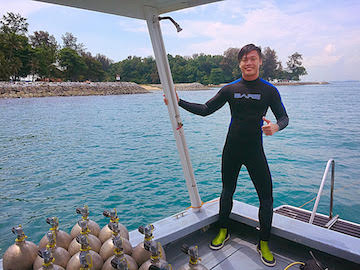

|  | Aden IPPhD Student (2017-2021)Currently a Scientist at the Centre for Animal Veterinary Services, National Parks Board
Email: ipyc(AT)u.nus.edu |
Project
I am utilizing molecular tools to DNA barcode and engender a visual and genetic database for the marine invertebrates at the Sisters' Island Marine Park (SIMP). New molecular techniques are much more economical and effective as compared to traditional tools for surveying and identifying species. I am involved in collection of marine invertebrate samples at the intertidal and subtidal regions of SIMP. The samples are preserved, DNA extracted for DNA barcoding and also photographed, to establish an extensive DNA barcoding library and coherent photographic database respectively. The DNA barcode library and photographic database would be ideal for future species identification, species detection by environmental DNA (eDNA) screening, population connectivity, comparison of genetic diversity and local management of marine invertebrate populations in Singapore.
Background
I am a BSc (Hons) graduate in Life Sciences, specializing in Environmental Biology. As I am an avid scuba diver, I am interested in knowing and understanding more about corals and marine invertebrates at both the intertidal and subtidal regions. I aim to have a comprehensive insight into this area of interest in terms of genetic differences and biodiversity of the local fauna through the application of molecular techniques.